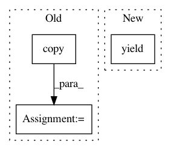

0d3ec0d63eb93fd808d9d1eb274c6bbd15255671,scipy/sparse/tests/test_base.py,_TestInplaceArithmetic,test_idiv_scalar,#_TestInplaceArithmetic#,794
Before Change
a /= 2
assert_array_equal(self.dat/2,a.todense())
a = self.datsp.copy()
a /= 17.3
assert_array_equal(self.dat/17.3,a.todense())
After Change
assert_array_equal(b, a.todense())
for dtype in self.supported_dtypes:
yield check, self.dat_dtypes[dtype], self.datsp_dtypes[dtype]
class _TestGetSet:
def test_getelement(self):
In pattern: SUPERPATTERN
Frequency: 3
Non-data size: 3
Instances
Project Name: scipy/scipy
Commit Name: 0d3ec0d63eb93fd808d9d1eb274c6bbd15255671
Time: 2013-06-07
Author: blake.a.griffith@gmail.com
File Name: scipy/sparse/tests/test_base.py
Class Name: _TestInplaceArithmetic
Method Name: test_idiv_scalar
Project Name: etal/cnvkit
Commit Name: 1281963269c819f22fed98583526df8946d18b4a
Time: 2016-04-20
Author: eric.talevich@gmail.com
File Name: cnvlib/commands.py
Class Name:
Method Name: do_import_theta
Project Name: scipy/scipy
Commit Name: 0d3ec0d63eb93fd808d9d1eb274c6bbd15255671
Time: 2013-06-07
Author: blake.a.griffith@gmail.com
File Name: scipy/sparse/tests/test_base.py
Class Name: _TestInplaceArithmetic
Method Name: test_imul_scalar